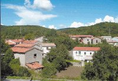

Fenomen na Ćićariji: Selo Žejane u Općini Matulji na cesti Mune – Permani
 Bura zi! Domnu cu tire! și cu tire, și cu tire! (Dobar dan! Bog bio s tobom! I s tobom, i s tobom!)
Tako se mi pozdravljamo i tako započinjemo razgovor. A na kojem jeziku? Na vlaškom! A gdje?
U Istri, s druge strane Učke, u Šušnjevici. U Šušnjevici i u selima oko nje: u Novoj Vasi, u Kontušima, u Jesenoviku i u Brdu, a mogli bismo tako conventicular – što znači razgovarati i u Ćićariji, u Žejanama.
Pa kakav je to jezik i tko su ti ljudi?
Oni su Vlasi, a jezik im nije slavenski nego romanski. Jezik im se razvio iz jednog pučkog govora latinskoga jezika. Naravno, to nije bio jezik jednog Cicerona, već žargon malog svijeta u provinciji, latinski dijalekt koji su nakon dugotrajne konačno prihvatili pokoreni podanici, stari Iliri u pokrajini Dalmaciji. Na toj pučkoj latinskoj osnovi razvio se među pokorenim Dačanima i Tračanima i današnji rumunjski jezik. Balkan je do dana današnjega ukleta zemlja neprestanih vječnih izbjeglica. Kad se konačno srušilo Rimsko Carstvo i kad su Balkan preplavile seobe naroda, invazije stranih, divljih plemena, jedan dio starog gradskog i prigradskog stanovništva spasio je glavu… i pobjegao u planinu, među čobane, među nomade. E, tu ti mene u planini kontroliraj, divljače!
Tako pokojni akademik Branko Fučić piše u svojoj prekrasnoj knjizi Terra incognita o istarskim Vlasima s kojima je prijateljevao: "S užitkom sam ih gledao i slušao kako pjevaju i kako plešu. Nigdje kao kod njih toliko temperamenta! To su redom bistri i okretni ljudi," navodi akademik Fučić i sjeća se da su i na otok Krk u 15. stoljeću stigli mnogobrojni Vlasi pred turskim zulumom, stigli i u njegovu rodnu Dubašnicu, Poljice i cijeli Šotovento, a vlaški se tamo čuo do početka 19. stoljeća.
Žejanski govor pod krilom UNESCO-a
No, u Žejanama je vlaški jezik ostao živ od sredine 15. stoljeća, kad su vlaški stočari, preci današnjih Žejanaca, ovamo stigli, pa sve do danas, možda stoga što je selo bilo izdvojeno. Štoviše, tvrdi se da je žejanski govor, tako ga oni zovu, najočuvaniji među istarskim Vlasima i danas se putem Interneta širi svijetom, svim zemljama i kontinentima do kojih je Žejance i njihove potomke odnio vjetar življenja.
Žejane su selo na cesti Permani – Mune, prema popisu iz 1991., sa 141 žiteljem, ali s dugom tradicijom, udaljeno od Matulja 18 kilometara, na nadmorskoj visini od 618 metara, a prvi put se spominje 1465. godine kao Xiana. U 16. i 17. stoljeću ovo selo više je puta teško stradalo u austrijsko - mletačkim ratovima. Stanovnici su se bavili zemljoradnjom, stočarstvom i sječom šume, te proizvodnjom drvenog ugljena, krbuna.
Nešto više o Žejanama i Žejancima danas rekli su nam naši sugovornici Mauro Doričić, predsjednik Folklornog društva Žejanski zvončari, koji i živi u Žejanama, te zaljubljenici u svoje mjesto, ali sad žitelji Matulja Boris Doričić, uronjen u žejanski govor i njegov ambasador u širenju svijetom, kao i Cvetko - Rado Doričić, harmonikaš poznat nadaleko, obuzet pjesmom, koji je čak 17 godina u doba mesopusta svirao i za Halubajske zvončare. Žejanskima valjda vječno, barem uvijek kad je trebalo, pa i više.
Mauro Doričić kaže da se u eri kompjutora žejanski proširio Internetom, a i organizacija UNESCO Ujedinjenih naroda pomaže, financirajući očuvanje jednog od najstarijih govora starog kontinenta. Stigli su i na londonski kanal Discovery, na kome imaju svoje tri minute koje se emitiraju po cijelom svijetu. Izdali su i tri CD-a na žejanskom govoru. Profesor iz Rima Petru Laciu prevodi, jer je tumač za rumunjski jezik, a tu je kao veza i jedan profesor iz Udina.
Još od 1962. postoji rječnik žejanskoga i hrvatskoga jezika koji je napisao August Kovačec iz Zagreba. Boris Doričić preveo je na žejanski Grimmove bajke Ivicu i Maricu (Jivica ši Moarica) i Crvenkapicu sa crtežima. Preveo je na žejanski i onu vječnu meksičku melodiju La paloma. Objašnjava da žejanski ima uz pet hrvatskih samoglasnika, još i pet svojih mutanata – posebno a, pa ije, uo, oa i ea.
Ako su korijeni današnjih Žejanaca bili negdje u nekadašnjoj Vlaškoj Vojvodini, na području današnjeg Banata, jer Rumunjske još nije bilo, treba reći da su na svom putu kroz stoljeća ti stari vlaški stočari odatle preko Dalmacije do Ćićarije i Istre pokupili niz jezičnih starohrvatskih izraza i drugih, pa i onih u ovom kraju, jer nisu bili imuni na okruženje, i to ne samo na jezik, već i na običaje i život sam.
Žejane svima u srcu
Cvetko - Rado Doričić veli da Folklorno društvo uz Žejanske zvončare ima i plesnu skupinu, ali i pjevače koji bugare. Žejanski specifični dvoglasni kanat, bugarenje, sačuvan je. Nekad su bugarile i žene, danas to čine samo samo muškarci. Nema nikakve sličnosti s istarskom ljestvicom. Uz to prisutna je i tamburica s dvjema žicama, cindra. Bugarenje se ne da notno zapisati.
Žejanaca ima više izvan sela nego u njemu. Makar gdje živjeli, a puno ih živi u Rijeci, Opatiji i Matuljima, kao i drugdje, oni su odani svom mjestu koje je za njih nepresušni izvor poticaja, nekakvo utočište srca. I oni svuda u svijetu često pišu i traže sve što se objavi o Žejanama. Tako se spominju i intimne veze u svijetu među potomcima Žejanaca. A kažu do njih je stigao samo jedan zet sa strane, jer je vlaški, odnosno za njih žejanski jezik pravi obiteljski govor, onaj u kući, a po nekima ne mora biti i jezik sela.
Nema proslave ili fešte u Žejanama, niti nastupa vani, a folklorno društvo je često nastupalo okolo, pa i u istarskim selima oko Čepićkog jezera, gdje žive njihovi vlaški srodnici, a da se sadašnji i bivši Žejanci ne skupe. Pogotovo to vrijedi kad nastupaju za poklada popularni Žejanski zvončari. Ne poznam mjesto u koje se oni možda privremeno ili trajno iseljeni u okolicu s toliko radosti uvijek vraćaju, makar i na trenutak kao što to čine Žejanci.
Piše Vladimir Jugo
Snimio Marin Aničić
September 18, 2005
© 2005 Novi List